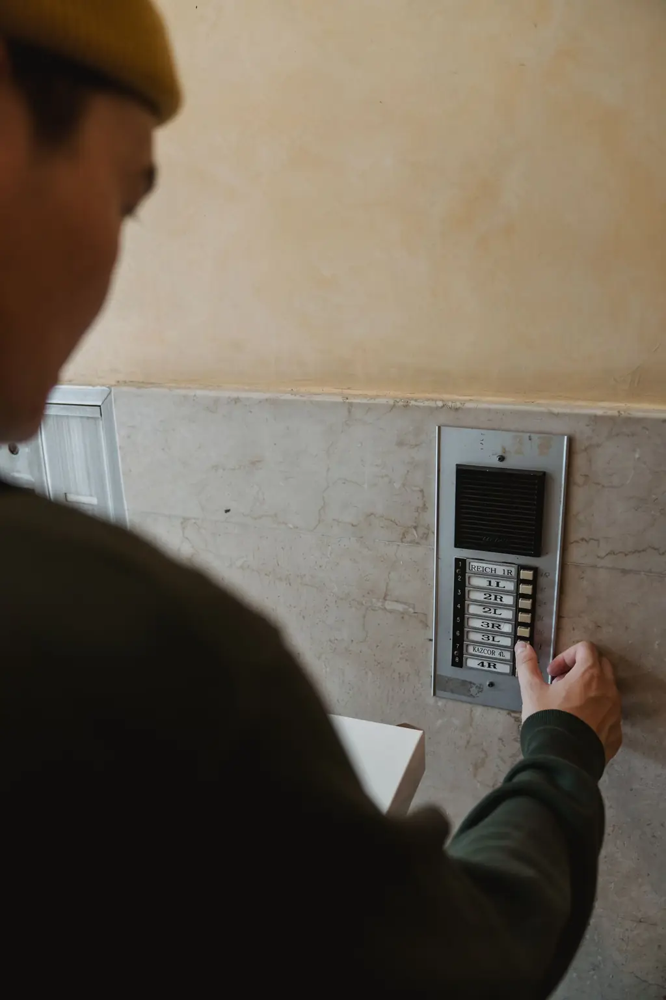

Interphones et visiophones
Platines de rue, combinés ou application mobile, adaptés au nombre de logements.
Des accès qui fonctionnent, des badges que vous gérez en deux clics.
Interphone en panne, badges perdus qu'on ne peut pas désactiver, prestataire injoignable ? Nous installons et entretenons l'interphonie et le contrôle d'accès de votre immeuble ou de vos locaux, avec une astreinte 24 h/24.
Réponse sous 24 h ouvrées. Syndics et gestionnaires bienvenus.

Cliquez sur votre situation : le formulaire se remplit tout seul.
Nos solutions
Platines de rue, combinés ou application mobile, adaptés au nombre de logements.
Badges résidents, accès Vigik pour La Poste et les services, programmation à distance.
Accès par zones et plages horaires pour bureaux, parkings et locaux techniques.
Serrures à badge ou à code pour portes de locaux, sans changer toute la porte.
Visites préventives et intervention 24 h/24 sous contrat.
État des lieux de vos accès et plan de remplacement chiffré.
Comment ça se passe
Syndic, conseil syndical ou entreprise : vous nous décrivez l'existant.
Relevé des portes, du câblage et des besoins, rapport remis.
Solution, planning et contrat de maintenance, prêts pour l'assemblée générale.
Pose planifiée, badges programmés, gestionnaire formé.
Réalisations récentes
Paris 12e · Copropriété de 40 lots
Boulogne-Billancourt · Bureaux
Montreuil · Résidence
Nos engagements
Laura Chen, directrice technique
« Nous ne savions plus qui avait des badges. Tout est maintenant visible en ligne, et on désactive un badge perdu en deux clics. »
« Installation faite sans bloquer nos équipes, et une vraie astreinte le week-end. »
Questions fréquentes
Votre question n'est pas là ?
Appelez-nous au 01 99 00 72 64.
Un système qui permet à La Poste et à certains services autorisés d'accéder aux parties communes sans donner de code, avec des droits limités dans le temps.
Oui, avec nos systèmes gérés en ligne, le gestionnaire désactive un badge en quelques secondes.
Pour le remplacement de l'interphonie ou du contrôle d'accès en copropriété, généralement oui. Nous fournissons des documents prêts pour l'AG.
Oui, dans la plupart des cas. L'audit indique ce qui peut être conservé.
Un technicien joignable 24 h/24 pour les pannes bloquantes des installations sous contrat de maintenance.
Oui, avec un visiophone connecté, chaque résident peut voir le visiteur et ouvrir depuis une application.
Devis gratuit
Syndic, conseil syndical ou entreprise : décrivez-nous votre immeuble ou vos locaux. On vous rappelle pour fixer l'audit.
Du lundi au vendredi, 8 h à 18 h, astreinte 24 h/24
88 avenue Daumesnil, 75012 Paris
Nous intervenons à Paris, Hauts-de-Seine, Seine-Saint-Denis, Val-de-Marne, Yvelines, Essonne, Val-d'Oise.